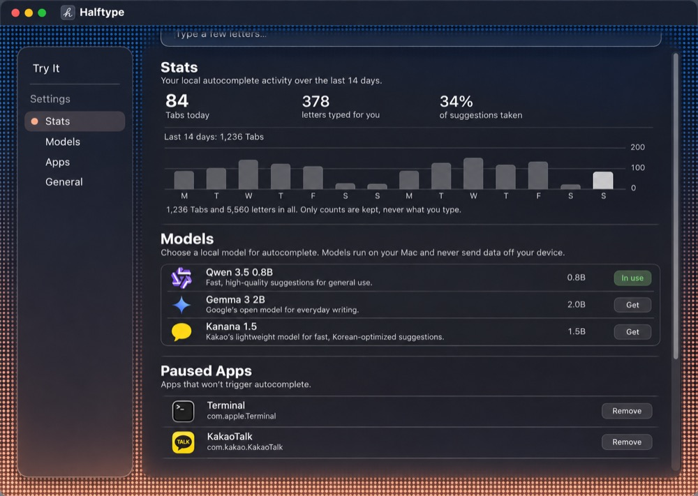
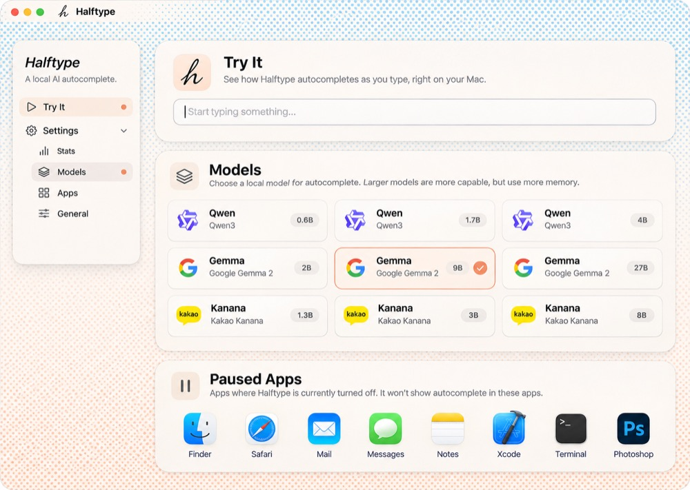

Image ideas (Codex image tool: ideas, not builds)
NE + F as Codex draws it, mid-scroll · image

From L and M as references.
OPanes over a fixed sky, models as cards · image

From K and M as references.
John: “I like E + F, maybe with the visual improvements/clarity of M (like how models have icons, ideally actually for the gemma/qwen models and such, and app icons and stuff).” Every window is live: scroll it, click the card.

From L and M as references.

From K and M as references.